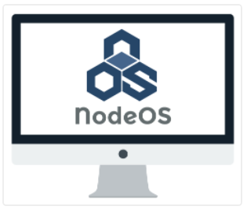

Sistemas Operacionais

Um sistema baseado no Node.js, escrito apenas com JavaScript, foi desenvolvido. É o NodeOS.
Qualquer pacote do npm é um pacote do NodeOS, o qual conta com mais de 240.000 pacotes. O objetivo do NodeOS é fornecer apenas o necessário e o npm cuida do resto. Já que qualquer um pode contribuir com o npm, qualquer um pode criar pacotes para o NodeOS.
Você pode ver mais em: http://node-os.com/